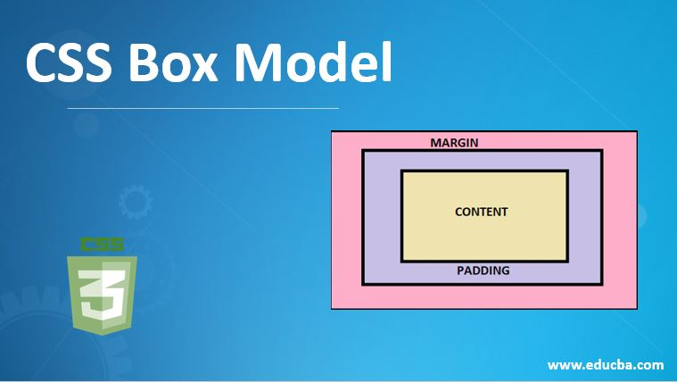

¿Qué es el Box Model?
El nombre 'box-model' (modelo de caja) se llama así porque, en los navegadores, todo se construye a
partir
de cajas.

Entonces, lo primero que debemos de entender, es que cada elemento que definimos en un documento HTML se
mostrará en el navegador como una caja rectangular esta es la forma en que se representan todos los
elementos, no existen elementos triangulares, redondos, poligonales etc. Todos los elementos en HTML por
defecto son rectangulares ya que internamente el navegador dibuja un rectángulo.
Las partes que componen cada caja y su orden de visualización desde el punto de vista del usuario son
las
siguientes:
• Contenido (content): se trata del contenido HTML del elemento (las palabras de un párrafo, una imagen,
el
texto de una lista de elementos, etc.)
• Relleno (padding): espacio libre opcional existente entre el contenido y el borde.
• Borde (border): línea que encierra completamente el contenido y su relleno.
• Imagen de fondo (background image): imagen que se muestra por detrás del contenido y el espacio de
relleno.
• Color de fondo (background color): color que se muestra por detrás del contenido y el espacio de
relleno.
• Margen (margin): separación opcional existente entre la caja y el resto de cajas adyacentes.
Cajas en bloque y en línea
En CSS, en general, hay dos tipos de cajas: cajas en bloque y cajas en línea.
Estas características se refieren al modo cómo se comporta la caja en términos de flujo de página y en
relación con otras cajas de la
página:
Si una caja se define como un bloque, se comportará de las maneras siguientes:
• La caja fuerza un salto de línea al llegar al final de la línea.
• La caja se extenderá en la dirección de la línea para llenar todo el espacio disponible que haya en su
contenedor. En la mayoría de los casos, esto significa que la caja será tan ancha como su contenedor, y
llenará el 100% del espacio disponible.
• Se respetan las propiedades width y height.
• El relleno, el margen y el borde mantienen a los otros elementos alejados de la caja.
A menos que decidamos cambiar el tipo de visualización a en línea, elementos como los encabezados (por
ejemplo, h1) y todos los elementos p usan por defecto block como tipo de visualización externa.
Si una caja tiene una visualización externa de tipo inline, entonces:
• La caja no fuerza ningún salto de línea al llegar al final de la línea.
• Las propiedades width y height no se aplican.
• Se aplican relleno, margen y bordes verticales, pero no mantienen alejadas otras cajas en línea.
• Se aplican relleno, margen y bordes horizontales, y mantienen alejadas otras cajas en línea.
El elemento (a), que se utiliza para los enlaces, y los elementos (span), (em) y (strong) son ejemplos
de
elementos que se muestran en línea por defecto.
El tipo de caja que se aplica a un elemento está definido por los valores de propiedad display, como
block y
inline, y se relaciona con el valor externo (outer) de visualización (display).